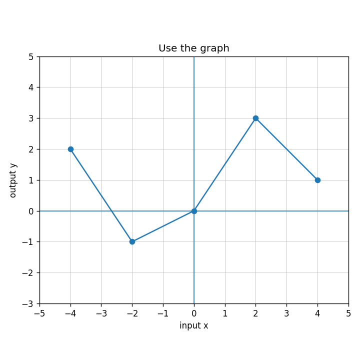

For $p(x)=5-x$, find $p(-2)$ and $p(8)$.
Use the graph to estimate the outputs for $x=-4$, $x=0$, and $x=4$.

Decide whether the relationship below is a function. Then write a sentence explaining the input-output issue clearly.
| Input | 1 | 2 | 3 | 4 | 4 |
|---|---|---|---|---|---|
| Output | 6 | 8 | 10 | 12 | 14 |
Create one table that represents a function and one table that does not represent a function. Then revise the non-function table so it becomes a function without changing every row.
Evaluate: $$6^2-4(5)+9$$
Evaluate $-2x+11$ when $x=7$.
Evaluate: $$(-2)^3+4^2$$
Evaluate $3(c-2)^2$ when $c=6$.
A delivery service charges 7 dollars per package and a one-time fuel fee of 16 dollars. Write and evaluate an expression for 11 packages.
Evaluate $\dfrac{m+n}{2}+3m$ when $m=4$ and $n=-10$.
Explain why $2(3+8)$ and $2\cdot3+8$ do not represent the same order of operations. Evaluate both.
Plan A costs $20+6m$ dollars. Plan B costs $8+9m$ dollars. Choose two values of $m$, evaluate both plans, and explain what your results suggest.
Find the missing output if the rule is $y=x+9$ and the input is $14$.
Write a rule for the table.
| Input | 0 | 1 | 2 | 3 |
|---|---|---|---|---|
| Output | 3 | 7 | 11 | 15 |
A student says the rule for the table is $y=4x$ because the outputs increase by $4$. Critique and correct the rule.
| $x$ | 0 | 1 | 2 | 3 |
|---|---|---|---|---|
| $y$ | 5 | 9 | 13 | 17 |
Design an input-output rule with a starting value of $-2$ and a constant change of $6$. Make a table for four inputs and explain how the table shows the rule.